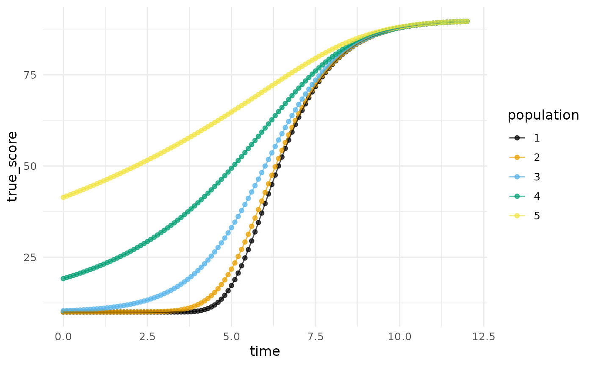
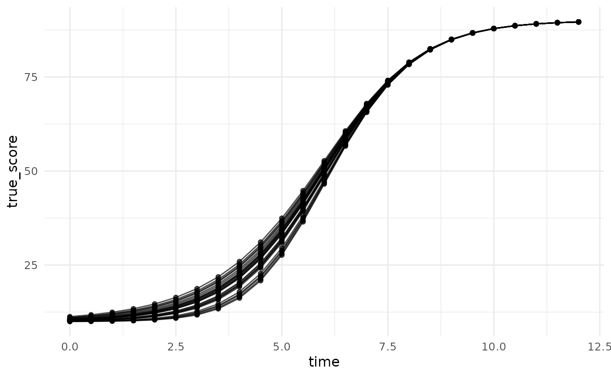
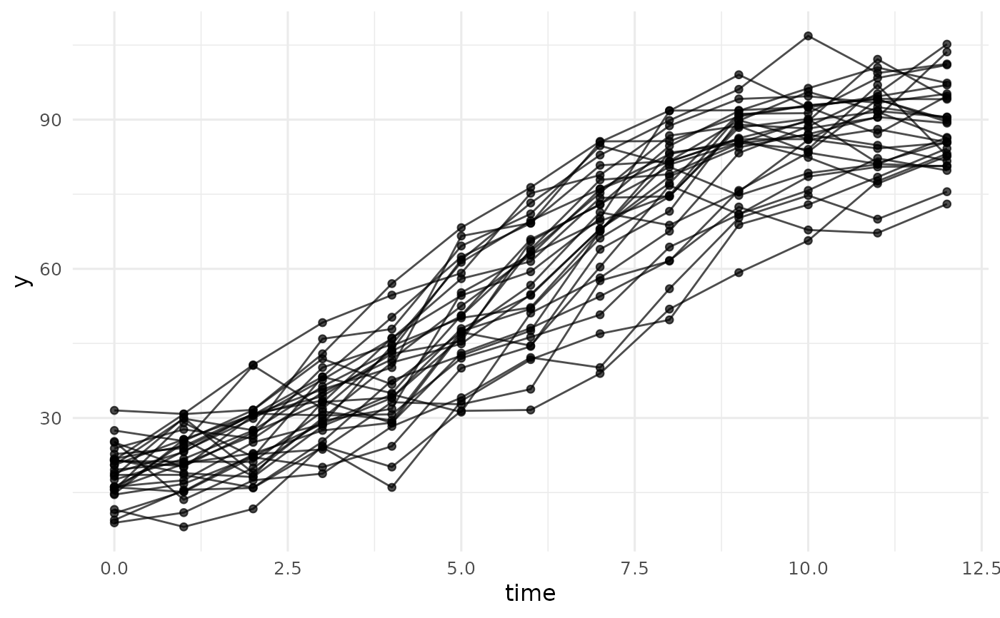

Simulate Data From a Richards Change (Growth) Model
Source:R/simulate_longitudinal_richards.R
simulate_longitudinal_richards.RdGenerates longitudinal data from a random-coefficients Richards change model, the flexible sigmoidal family whose point of inflection is itself a parameter rather than a fixed fraction of total change (Richards, 1959). The deterministic part of the five parameter Richards curve is $$\mu(t) = \frac{\alpha}{\left(1 + \delta \exp(-\gamma (t - \beta))\right)^{1/\delta}} + \zeta,$$ the parameterization of Kelley (2005, 2008). The Richards family subsumes the package's other sigmoidal curves as special cases: at \(\delta = 1\) it is exactly the logistic, and in the limit \(\delta \rightarrow 0\) it is the Gompertz, so \(\delta\) lets the data, or the theory, choose where in its course the process turns from acceleration to deceleration. Guo, Cheng, and Kelley (2016) use this flexibility to model self-replicating malware propagation, where the network structure moves the inflection of the outbreak.
Usage
simulate_longitudinal_richards(
n,
target_times = NULL,
fixed_parameters,
time_range = NULL,
occasions = NULL,
time_distribution = "uniform",
random_variances = 0,
random_correlation = NULL,
error_variance = NULL,
reliability = NULL,
error_structure = c("independent", "ar1", "compound_symmetry", "toeplitz"),
error_correlation = NULL,
timing_sd = 0
)Arguments
- n
A single positive integer, the number of units (persons, animals, trees, classrooms) whose trajectories are drawn, or a vector giving the number of units for each population, one entry per parameter vector in
fixed_parameters.- target_times
Numeric vector of the nominal measurement times, one shared schedule for every unit. Give either this or
time_range.- fixed_parameters
The population parameters
c(alpha = , beta = , gamma = , delta = , zeta = )(an unnamed length-5 vector is taken in that order), or a list of such vectors, one per population (distinct data generating parameter vectors):alphaThe total change: the curve travels
alphaunits from the lower asymptotezetato the upper asymptote \(\alpha + \zeta\) (for \(\gamma > 0\)).betaThe point of inflection on the time axis.
gammaThe curvature: how sharply the curve rises through its inflection. Negative values flip the curve to decreasing.
deltaThe shape parameter (\(\delta > 0\)): where the inflection falls on the outcome axis, \(y^{*} = \alpha (1 + \delta)^{-1/\delta} + \zeta\). At \(\delta = 1\) the inflection sits at half the total change (the logistic); as \(\delta \rightarrow 0\) it slides down to \(\alpha / e + \zeta\), about 36.8% (the Gompertz); larger \(\delta\) pushes it later than halfway.
zetaThe lower asymptote (for \(\gamma > 0\)). The intercept is \(\phi = \alpha (1 + \delta \exp(\gamma \beta))^{-1/\delta} + \zeta\).
- time_range
Alternative to
target_times:c(lower, upper)bounds from which each unit draws its own measurement times, so no two units share a schedule (e.g., age in weeks at testing rather than a fixed grade). Requiresoccasions; withtime_range, the level-one error must be a singleerror_variancewith the default independent structure, andtiming_sddoes not apply.- occasions
With
time_range: a single positive integer (every unit measured the same number of times) orc(min, max), from which each unit's number of measurement times is drawn uniformly.- time_distribution
Distribution of the unit-specific times over
time_range; currently"uniform".- random_variances
Between-unit variances of
(alpha, beta, gamma, delta, zeta), a single number recycled to all five or a length-5 vector. Default0. A named vector over any subset of the parameter names (e.g.,c(delta = 0.04)) varies only those named and leaves the rest fixed. A positive variance ondeltamust be small enough that no unit's drawn \(\delta\) falls at or below zero, where the curve is undefined; the function stops with a count if that happens.- random_correlation
Optional 5-by-5 correlation matrix among the random parameters; default uncorrelated.
- error_variance, reliability, error_structure, error_correlation, timing_sd
The level-one error and assessment-time machinery, with the same meaning as in
simulate_longitudinal_polynomial: specify exactly one oferror_varianceorreliability(solved here through the first-order delta method true-score variance; because the curve is nonlinear in its parameters, that approximation, and thereliability_by_occasionattribute with it, can drift from the realized variance ratio when the random variances are large relative to the mean curve);error_structureanderror_correlationset the across-occasion error correlation;timing_sdjitters the actual assessment times.
Value
A long-format data.frame with columns id,
population, occasion, target_time, time,
true_score, and y, directly usable with
plot_trajectories and nonlinear mixed-model fitters
such as nlme::nlme(). Attributes carry the model,
fixed_parameters, random_covariance,
error_variance, error_covariance,
reliability_by_occasion, and schedule
("shared" or "unit_specific").
Details
The logistic and the Gompertz fix where the inflection falls as a fraction of total change (50% and 36.8%); choosing between them is choosing that fraction by assumption. The Richards curve makes the fraction estimable through \(\delta\), at the price of one more parameter and a harder estimation problem, since \(\delta\) and \(\gamma\) carry overlapping information in finite samples (Richards, 1959; Kelley, 2005). Simulating from the Richards family at several \(\delta\) values is the natural way to study whether a design can tell those shapes apart.
References
Guo, H., Cheng, H. K., & Kelley, K. (2016). Impact of network structure on malware propagation: A growth curve perspective. Journal of Management Information Systems, 33(1), 296–325.
Kelley, K. (2005). Estimating nonlinear change models in heterogeneous populations when class membership is unknown: Defining and developing the latent classification differential change model (Doctoral dissertation). University of Notre Dame.
Kelley, K. (2008). Nonlinear change models in populations with unobserved heterogeneity. Methodology, 4(3), 97–112.
Richards, F. J. (1959). A flexible growth function for empirical use. Journal of Experimental Botany, 10(2), 290–301.
See also
simulate_longitudinal_logistic (the
\(\delta = 1\) special case),
simulate_longitudinal_gompertz (the
\(\delta \rightarrow 0\) limit),
simulate_longitudinal_negative_exponential,
simulate_longitudinal_polynomial,
plot_trajectories.
Other data simulators:
simulate_ancova_data(),
simulate_ancova_factorial_data(),
simulate_anova_data(),
simulate_longitudinal_gompertz(),
simulate_longitudinal_logistic(),
simulate_longitudinal_negative_exponential(),
simulate_longitudinal_polynomial(),
simulate_regression_data()
Author
Ken Kelley kkelley@nd.edu
Examples
# The family in one panel: five Richards curves sharing alpha, beta,
# gamma, and zeta and differing only in the shape parameter delta.
# delta near 0 is the Gompertz, delta = 1 is the logistic, and
# larger delta pushes the inflection later than halfway. Each curve
# is its own population of size one, so a single call draws the whole panel.
panel <- simulate_longitudinal_richards(
n = 1, target_times = seq(0, 12, by = 0.1),
fixed_parameters = list(
c(alpha = 80, beta = 6, gamma = 0.9, delta = 0.02, zeta = 10),
c(alpha = 80, beta = 6, gamma = 0.9, delta = 0.25, zeta = 10),
c(alpha = 80, beta = 6, gamma = 0.9, delta = 1.00, zeta = 10),
c(alpha = 80, beta = 6, gamma = 0.9, delta = 3.00, zeta = 10),
c(alpha = 80, beta = 6, gamma = 0.9, delta = 8.00, zeta = 10)),
error_variance = 0
)
plot_trajectories(panel, id = "id", time = "time",
outcome = "true_score", group = "population")

# Individual differences in a single parameter: only the shape
# varies (a named entry leaves the other variances at zero), so the
# curves agree on floor, ceiling, timing, and curvature yet turn
# from acceleration to deceleration at different heights.
set.seed(113)
d_delta <- simulate_longitudinal_richards(
n = 25, target_times = seq(0, 12, by = 0.5),
fixed_parameters = c(alpha = 80, beta = 6, gamma = 0.9,
delta = 1, zeta = 10),
random_variances = c(delta = 0.04), error_variance = 0
)
plot_trajectories(d_delta, id = "id", time = "time",
outcome = "true_score")

# Individual differences in every parameter, plus level-one error:
# a late-inflecting outbreak-style curve, with delta = 3 placing the
# inflection at about 63% of total change, (1 + 3)^(-1/3).
set.seed(113)
d <- simulate_longitudinal_richards(
n = 30, target_times = 0:12,
fixed_parameters = c(alpha = 80, beta = 6, gamma = 0.9,
delta = 3, zeta = 10),
random_variances = c(alpha = 36, beta = 1, gamma = 0.01,
delta = 0.04, zeta = 9),
error_variance = 16
)
plot_trajectories(d, id = "id", time = "time", outcome = "y")

# delta = 1 reproduces the logistic exactly: with no randomness and
# no error, the two simulators return identical true scores.
d_r <- simulate_longitudinal_richards(
n = 1, target_times = 0:5,
fixed_parameters = c(alpha = 80, beta = 3, gamma = 1,
delta = 1, zeta = 10),
error_variance = 0)
d_l <- simulate_longitudinal_logistic(
n = 1, target_times = 0:5,
fixed_parameters = c(alpha = 80, beta = 3, gamma = 1, zeta = 10),
error_variance = 0)
all.equal(d_r$true_score, d_l$true_score)
#> [1] TRUE